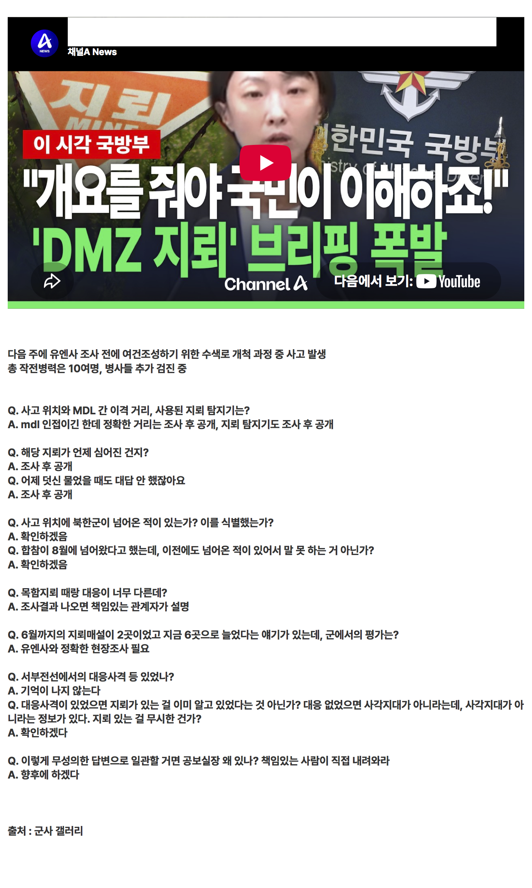

요약: 몰라 시발

요약: 몰라 시발
왜 대령씩이나 데려다 저러고있냐? 그냥 어디서 저능아새끼 하나 데려다가 대답3개 반복 돌려도 다를거 없지않나?
말 잘듣는 사람 세운거지~
이야 일 잘하네
저러라고 세운거잖아
ㅋㅋ 너네가 뽑았으니 감당해야지
몰라 레후
ㅁ?ㄹ
대체 어떻게 저자리에 있는거지;;
대변인은 별정직 공무원. 필요하면 정부에서 따로 선발함
합찹공보실장은... 뭐 국방부장관이 뽑으니 ㅋ
즉 저딴 태도가 정부의 기조란 뜻
맨날 저 지랄임
저딴 인간 대변인, 공보실장으로 뽑는 놈들이 남보고는 소통없다 지랄해댄거 보면 코미디 정작 그 소통없다고 욕먹은 이들은 훨씬 성의껏 소통했었음
준비가 안되었는데 빨리 해명하라고 독촉해서 그런거 아님?
매번 저딴소리할거면 기자회견을 왜 하는거냐 똥개훈련이냐
정말 저혈압은 국방부 브리핑보면 좋을거같아
오피셜 : 몰?루? ㅋㅋㅋㅋ
몰라 할꺼면 브리핑을 왜함?
국방부 대변인년은 페미기자출신에 이번 답변은 아무것도 안하고
합참 공보실장 이라는사람은 몰루? ㅇㅈㄹ
저럴거면 왜 해 브리핑을...
이러다가 북한 전쟁나도 확인해보겠다 하겠네
몰라 시발 레후
뭘 브리핑 한 건데
??? : ( 위원장 동지.... 제게 도움을 주시라요.... )
확인해보겠다, 모르겠다, 조사 후 공개
이 세개만 그냥 씨부리고 있음ㅋㅋ